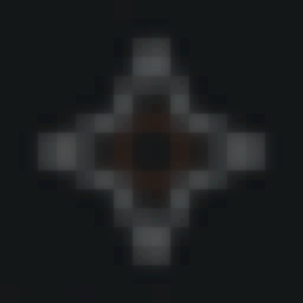

Morning light
Cool, bright light as soon as you wake tells your body clock the day has started. Ember rises to it in about 25 minutes, then settles into daylight over the next hour.
1800K → 6800K → 6500K · Full brightnessNEWS • CIE S 026 • BROWN 2022 • DAYLIGHT BY DAY • DARK BY NIGHT
Mac menu bar · macOS 14+ · $2.99 once
Ember paints the Mac display with the day. Cool light when you wake. True color while you work. Warm and dim for the three hours before bed, so your screen stops telling your body it is noon.
One-time payment on Whop. No subscription. No account. No telemetry.
EMBER ON · NIGHT LIGHT · 1800K · 55% · BLUE LIGHT −87%
Preview — approximate. Ember rewrites the display gamma table; a web page can only tint pixels.
The app
Two times. That is the whole setup. Ember reads the sun for your location, draws the day on one track, and shows you what your screen is doing right now in kelvin and in plain words.
Evening starts at sunset or three hours before bed, whichever comes first. Morning ramps in 25 minutes.
Photos, Preview, Figma, and Photoshop get true color while they are in front. Pause 1h when you need it anywhere else.
Gentle keeps text easy to read. Standard is the Brown 2022 target. Deep is for dark rooms.
Drag along the day track and your screen shows that hour's light. Let go and it eases back to now. Pause, resume, and night strength also work from Shortcuts and Spotlight.
Warm and dim. Low blue light so sleep comes easier.
Sleep schedule
Settings
The day, on the screen
Cool, bright light as soon as you wake tells your body clock the day has started. Ember rises to it in about 25 minutes, then settles into daylight over the next hour.
1800K → 6800K → 6500K · Full brightnessTrue color at 6500K. Nothing is cut. The screen stays out of the way while you work.
6500K · Full colorStarts at sunset or three hours before bed, whichever comes first. Blue light eases off fast in the first 40 minutes so melatonin can rise, then slides toward night.
6500K → 2700K in 40 min · Blue light −70%Warm and dim until you wake. Choose Gentle, Standard, or Deep. Pause one hour when you need true color.
1800K · 55% · Blue light −87%How it works
It lives in the menu bar and starts at login. No dock icon. No account.
Two times. Location fills sunrise and sunset. Brunswick, Georgia is the fallback.
Ember turns Night Shift off and quits f.lux so they do not fight. Every change fades in; nothing snaps.
Not f.lux. Not Night Shift.
Wait for sunset, then tint the screen orange. Day is unmodified. Night is a filter over the whole picture, and the blue primary that drives melanopsin is barely touched.
Follows wake, bed, and the sun. Cuts the blue primary that hits melanopsin. Dims at night. Cool light in the morning, not only warmth at dusk. Ramps are blended in mired, the scale the eye uses, so the change is even from start to end.

Price
Pay on Whop, come back here, download. No subscription, no license key, no account.
Apple silicon · macOS 14+ · Checkout by Whop
Questions